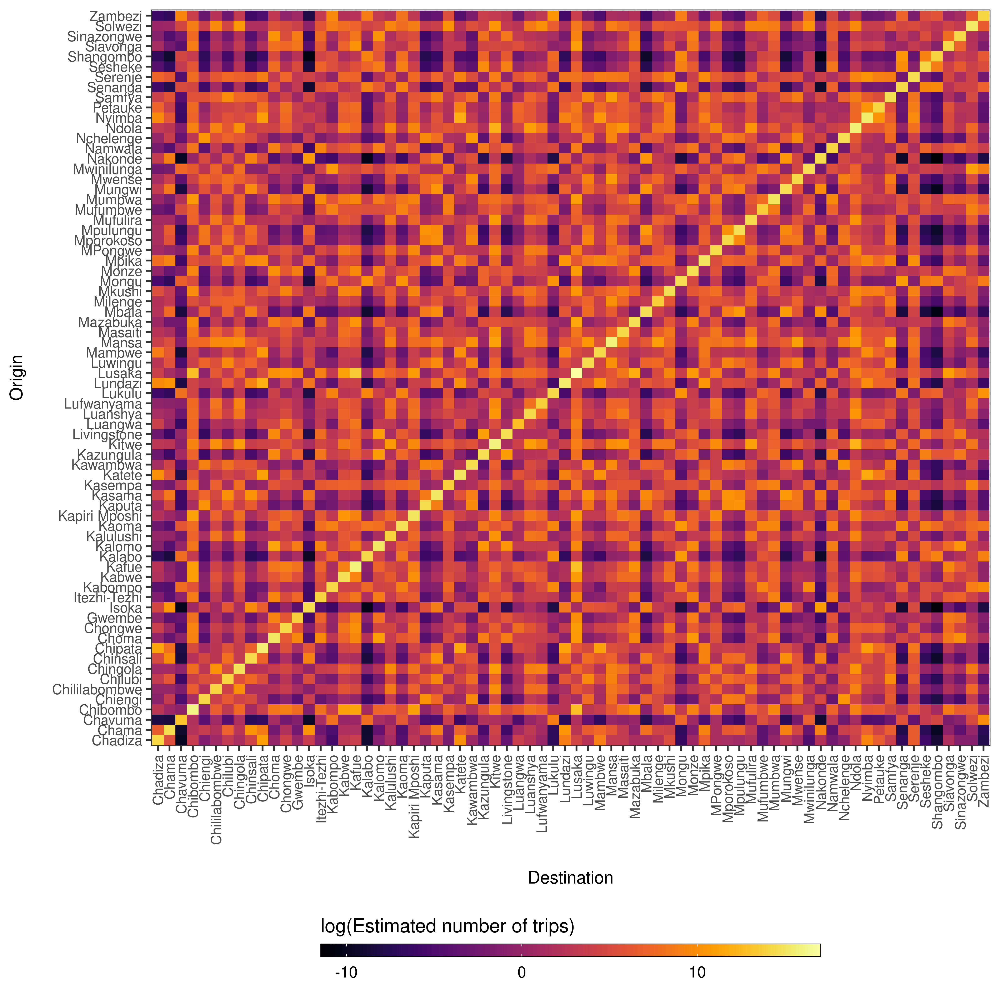

Mobility modelling for infetious disease epidemiology
Demonstration
Most users will come to use nomad with a shape file for which they want mobility predictions.
library(tidyverse)
# Get our shape object. Here let's use the MAP Zambia Admin 2
zmbsf <- malariaAtlas::getShp(ISO = "ZMB", admin_level = c("admin2")) %>%
sf::st_as_sf()For our given shape file, we need to fetch population sizes, which nomad makes easy by wrapping WorldPop
# Use the inbuilt population fetch functions in nomad
pop <- nomad::get_pop("ZMB", 2020)Next we need to unpack this to create population sizes for our regions
# And unpack the population based on our shape file
pop_extract <- nomad::unpack_pop(zmbsf, pop)
# Calculate our population per region
sum <- pop_extract %>%
dplyr::select(iso, name_2, pop) %>%
tidyr::unnest(cols = c(pop)) %>%
tidyr::drop_na() %>%
group_by(name_2) %>%
dplyr::summarise(pop = round(sum(pop)))From here we can create the distance matrix and the population sizes
# Now we can create our vector of population sizes needed to predict
N <- sum %>% pull(pop) %>% setNames(sum$name_2)
N <- N[order(names(N))]
# And also create our distance matrix of population sizes needed to predict
# N.B The coversion from degrees to metres
centroids <- sf::st_centroid(zmbsf) %>% sf::st_coordinates()
D <- mobility::get_distance_matrix(
x = centroids[,"X"],
y = centroids[,"Y"],
id = zmbsf$name_2)*113.5*1000 Now we can use a selected model from the nomad model database:
# Having selected our most suitable model having looked at the model database
# https://ojwatson.github.io/nomad/articles/model.html
mod <- nomad::model_db$zmb_cdr_2020_mod_dd_exp
# Predict mobility model using new data
M_hat <- predict(object=mod, newdata=list(D = D, N = N))
# And now we can plot our predictions as needed for our own work
ggplot(data=reshape2::melt(M_hat)) +
geom_tile(aes(x=factor(destination),
y=factor(origin),
fill=log(value))) +
xlab('Destination') + ylab("Origin") +
theme_bw() + theme(axis.text.x=element_text(size=8),
axis.text.y=element_text(size=8),
axis.title.x=element_text(size=10, margin = margin(t = 15)),
axis.title.y=element_text(size=10, margin = margin(r = 15)),
legend.position='bottom') +
viridis::scale_fill_viridis(option='inferno',
direction=1) +
guides(fill=guide_colorbar(title='log(Estimated number of trips)',
title.position='top',
label.theme=element_text(size=9),
barwidth=20,
barheight=0.5,
frame.colour='black',
ticks=TRUE)) +
theme(axis.text.x = element_text(angle = 90, hjust = 1, vjust = 0.5))